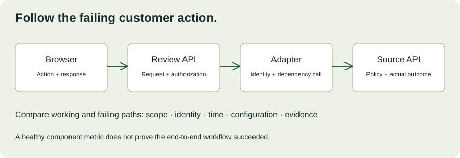

MODULE 04 · ADVANCED FIELD ENGINEERING
Harbor Supply’s review application works in staging, but one warehouse reports failures after a customer configuration change. The browser says “Something went wrong.” The customer says the API is healthy. Your dashboard shows normal CPU. You need to restore the workflow without guessing, widening permissions, or destroying the evidence that explains the failure.
This chapter develops a repeatable troubleshooting method for environments you do not fully own. The incident, logs, and customer names are fictional. Interactive checks reveal a fixed training dataset; they do not query a live service or execute infrastructure changes.
Learning objectives
- Translate a vague failure report into an observable problem statement.
- Use differences between working and failing paths to narrow hypotheses.
- Choose bounded tests that distinguish competing explanations.
- Separate mitigation, diagnosis, repair, and recovery verification.
- Communicate findings without confusing correlation with cause.
Allow 100–130 minutes including the incident lab. Prerequisites: Chapters 12–14. Produce an evidence ledger, hypothesis table, customer update, and recovery verification plan.
17.1 Start with impact and scope
Before asking which component is broken, establish what users cannot do. “The system is down” could mean failed sign-in, an empty list, stale evidence, or a review that appears saved but is missing later. These require different containment and diagnostic steps.
| Question | Example evidence |
|---|---|
| What action fails? | Opening the shipment evidence panel returns an error. |
| Who is affected? | Warehouse B coordinators; Warehouse A’s sampled requests succeed. |
| When did it begin? | First observed failure at 09:05 UTC; last known success at 08:58. |
| What still works? | Sign-in and the exception summary list remain available. |
| What changed? | A customer access-policy revision at 09:00; no application release recorded. |
| What is the fallback? | The previously approved OMS workflow during investigation. |
Keep observation separate from conclusion. “Failures started after a policy revision” supports a hypothesis; it does not prove the revision caused them. Record timestamp timezone, environment, action, correlation ID, and the source of each observation. Avoid collecting full customer payloads when metadata is sufficient.
17.2 Reconstruct the path
Draw the request’s route through browser, identity, review API, integration adapter, and source service. For each boundary ask what evidence would show that the request reached it, what identity was used, and what outcome returned. A successful health endpoint is not a substitute for the failing business operation.

A trace groups related operations into spans and can help connect work across service boundaries. It is only as complete as the instrumentation and propagation. Sampling, dropped telemetry, and asynchronous boundaries can leave gaps. OpenTelemetry: Traces ↗
Compare release and configuration identifiers, tenant or warehouse scope, identity claims, dependency endpoints, and request shapes. Keep sensitive attributes out of broadly accessible telemetry. A comparison request must use an approved identity; do not borrow another user’s token to make a test pass.
17.3 Use hypotheses that can lose
A hypothesis should predict an observation that could contradict it. “Something is wrong with permissions” is too broad. “The Warehouse B service identity lacks the scope required by the evidence endpoint after policy revision P42” predicts a specific denial and a difference from Warehouse A.
| Hypothesis | Discriminating check | Evidence against it |
|---|---|---|
| Browser rendering bug | Compare network response with the visible error. | The underlying API request itself returns a denial. |
| Global source outage | Compare equivalent authorized requests across warehouses. | Matched Warehouse A requests succeed while B requests fail. |
| Identity scope regression | Inspect approved policy diff and source denial metadata. | Required scopes and record permissions are unchanged and verified. |
| Quota exhaustion | Inspect response code, quota signals, and shared usage. | The source explicitly reports insufficient scope rather than throttling. |
Rank tests by information gained, time, and operational risk. Prefer read-only evidence and a small representative reproduction before changing configuration. Change one relevant variable at a time when feasible, so results remain interpretable. Google’s troubleshooting chapter describes hypothesis-driven investigation as a learnable discipline. Effective Troubleshooting ↗
17.4 Interactive incident: the missing evidence panel
At 09:10 UTC, Warehouse B reports that evidence panels fail while summary lists still load. No application release has occurred since yesterday. Choose checks to reveal observations, then decide which explanation is best supported. The checks are independent; there is no reward for guessing early.
Evidence console · fictional incident HB-17
Write the evidence that supports your explanation and one remaining uncertainty. A supported diagnosis still needs an approved corrective action and verification. Revealing a likely missing scope is not authorization to grant broad access.
17.5 “Works in staging” is a comparison prompt
List the environment differences before assuming the code is identical in effect. Staging may use a different identity, dataset, endpoint, network path, feature flag, certificate chain, proxy, clock, or API version. A local reproduction that removes the customer’s authorization boundary can hide the exact defect you need to understand.
Use a sanitized minimal reproduction that preserves the relevant conditions. State what was removed and what the reproduction cannot establish. If the bug only occurs with production data, coordinate an approved investigation with the data owner rather than copying the entire dataset into an unrestricted environment.
Track configuration provenance alongside build versions. A deployment can change behavior without a new application binary. Compare actual effective configuration with the intended state, not only a repository file that may not have been applied.
17.6 Mitigate without making diagnosis harder
Mitigation reduces customer impact; diagnosis explains the failure; repair addresses the defect. These can proceed on different timelines. If an approved fallback keeps coordinators working, use it while investigating. Do not delay containment merely to obtain a perfect explanation.
Before a production change, state the expected effect, affected scope, owner, rollback or reversal path, and evidence you will collect. Follow the customer’s change authority. Broadly disabling authorization or deleting queued work is not a routine diagnostic shortcut.
For incident HB-17
A narrow candidate repair is to restore the intended evidence-read scope for the Warehouse B service identity through the authorized policy process. First confirm that this scope was legitimately required and removed by mistake. Preserve the policy diff and denial examples. After the change, verify both intended access and rejection of another warehouse’s records. A successful page load alone does not prove the access boundary remains correct.
A restart can temporarily hide symptoms, lose volatile evidence, or duplicate work. It may be an appropriate documented mitigation in some systems, but explain why and capture the necessary state first when the incident permits. Avoid performing several unrelated changes and then claiming to know which one fixed the issue.
17.7 Coordinate across customer boundaries
An FDE may understand the application but lack authority over the customer’s identity platform, network, or source API. Escalate with a focused evidence packet: affected workflow, time range and timezone, sanitized correlation IDs, working comparison, suspected boundary, and the specific help needed. “Please check everything” creates delay.
Maintain a shared incident record and identify who coordinates, who investigates, and who communicates. The incident-response guidance from Google distinguishes restoring the service from coordinating the response; both matter when multiple teams are involved. Incident Response ↗
“Warehouse B evidence requests are failing at the source authorization boundary; sampled Warehouse A requests succeed. The policy change is our leading hypothesis, not yet a confirmed cause. Coordinators are using the approved fallback. We need the identity owner to review the scoped policy diff; our next update is at 09:40 UTC.”
This is a fictional update for practice. Share only the data recipients need, and distinguish observation, hypothesis, and action. Give a next update time even when a resolution estimate is not yet defensible.
17.8 Verify recovery beyond the first success
After an authorized repair, repeat the original failing task with representative affected identities and data. Confirm the intended workflow, cross-warehouse denial, stable error rates, and any backlog or missed work. Compare the recovery window with expected usage; one quiet minute is weak evidence for peak behavior.
Record which observations changed after the intervention and which alternatives remain possible. If several changes occurred together, acknowledge the causal uncertainty. Close the incident only when the agreed recovery criteria are met and the customer-facing impact is understood.
Turn the incident into prevention: add a contract test for required scopes, a deployment check for policy drift, a better error classification, or an alert on the affected journey. Assign an owner and a verification date. “Be more careful” is not a testable corrective action.
17.9 Troubleshooting workshop
New scenario: Warehouse C reports duplicate review records after intermittent timeouts. A recent adapter release changed retry behavior. The database is healthy, and the release owner suggests increasing the timeout and restarting workers. You do not yet know whether duplicates share an operation key.
Spend 25–35 minutes writing an investigation plan. Include immediate containment, a precise problem statement, three hypotheses, bounded tests, evidence preservation, and recovery verification. Do not assume the recent release is the cause solely because it is recent.
Worked response outline
Preserve correlated request, operation-key, and commit records. Determine whether the duplicates represent repeated effects or duplicate display rows. Compare retry identities and payloads before and after the release. Check atomicity between review storage and deduplication results, plus the behavior after timeout. Use the approved fallback or pause the affected write path if needed. Test a narrow repair with replay and concurrency cases, reconcile affected records through an authorized process, and verify that new retries do not repeat effects. Increasing a timeout alone does not establish idempotency.
| Rubric | Points |
|---|---|
| Impact, scope, and evidence quality | 20 |
| Falsifiable hypotheses and discriminating tests | 25 |
| Safe containment and customer authority | 20 |
| Recovery verification and prevention | 25 |
| Clear customer communication | 10 |
17.10 Verified resources
Primary-source pages checked October 27, 2026. Apply the methods to the actual permissions and telemetry available in your engagement.
- Effective Troubleshooting — write a hypothesis and an observation that would contradict it.
- Incident Response — separate technical mitigation from response coordination.
- OpenTelemetry: Traces — trace one customer action across boundaries and identify missing instrumentation.
17.11 Knowledge check
17.12 Completion check
You can now move from a vague customer complaint to a scoped observation, a testable explanation, a controlled action, and verified recovery. Good troubleshooting reduces uncertainty while protecting the customer’s workflow and access boundaries.
Field notes
What evidence would you collect before the next restart?